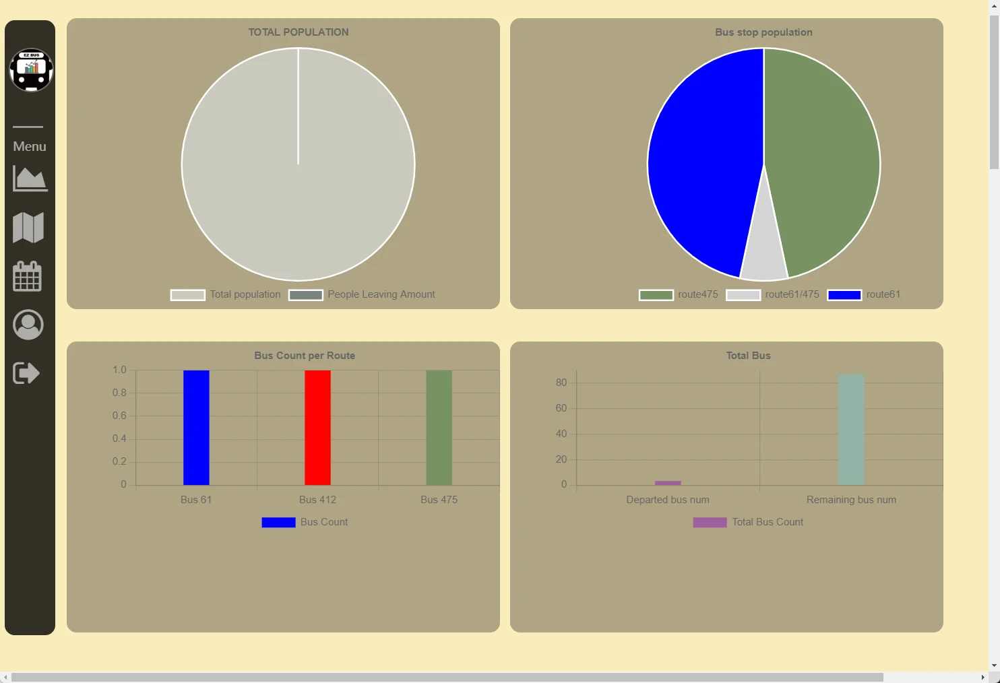
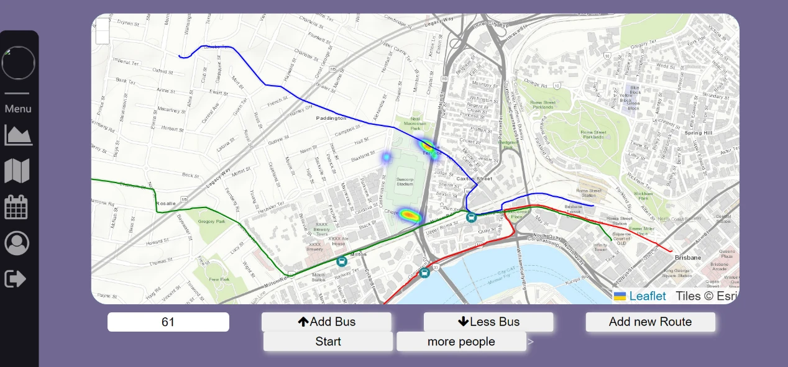

涉及的技术问题
- 经纬度与网格坐标的双向转换。
- 人群状态、公交位置与图表数据同步。
- 后台线程和调度事件同时修改状态。
- 参数检查、空线路处理与失败反馈。
01 / INTERACTIVE SIMULATION
点「开始仿真」，观察人流变化；选择一条线路增减公交，再查看地图和指标。所有操作仅影响你当前的演示。
人数口径：已生成 = 地图内 + 已上车。自动生成人流沿用原代码的 67 批 × 30 人，共 2,010 人；手动增加会叠加。
演示新增了暂停、固定种子重置、精确计数和导出。与 Python 使用不同随机数生成器，因此每一步轨迹不完全相同。
02 / HOW IT WORKS
经纬度映射为 100 × 100 网格，标记道路、车站和三条公交线路。
人群随机向目的站移动；公交按线路循环行进，在站点触发上车。
后端推送状态，前端发送增减公交指令，连接仿真与操作。
原版使用 Leaflet 热力图、公交标记与 Chart.js 图表展示状态。
保留团队原有前后端，修复同源连接、空数据、越界访问和线程同步等运行问题；另外新增免后端的浏览器演示。
原版登录使用前端样例数据与 localStorage，不能代表安全认证。本页不收集账号或密码。
这是规则驱动的交通仿真项目，代码未接入大模型、Agent 或 MCP。论文记录的 AI 使用是辅助编程与环境配置。
原后端的实验线路建议使用阈值判断与 DFS 路径搜索；它不保证全局最短或最优调度，本页未移植该实验功能。
03 / ORIGINAL PROJECT


04 / SCOPE & REPRODUCTION
行人按预设目的站随机移动；公交按离散路线点循环，末尾直接回到起点。到站就可上车，没有座位容量、红绿灯、真实旅行时间或车辆调度约束。道路单元的 80 人阈值约束移动，不限制出生点瞬时人数。不能把演示数字作为真实运营预测。
下载 GitHub 仓库，安装 requirements.txt，运行 source/Backend/FLASK.py，访问本机 5000 端口。服务同时提供原前端与 Socket.IO 接口；详细步骤见仓库 README。该服务仅用于本机教学复现。
原项目由 UQ DECO3801 的 ;p Winking 团队完成，Haoran Zheng 是团队成员。本展示保留团队归属；个人具体分工应结合真实经历说明，不将完整系统标为个人独立作品。
GitHub Pages 托管静态网页、原项目路网和线路数据；人流与公交规则在浏览器中计算，支持开始、暂停、线路公交增减、追加人流、重置与指标导出。Python 服务、原登录流程与实验线路建议未作为公网服务运行。